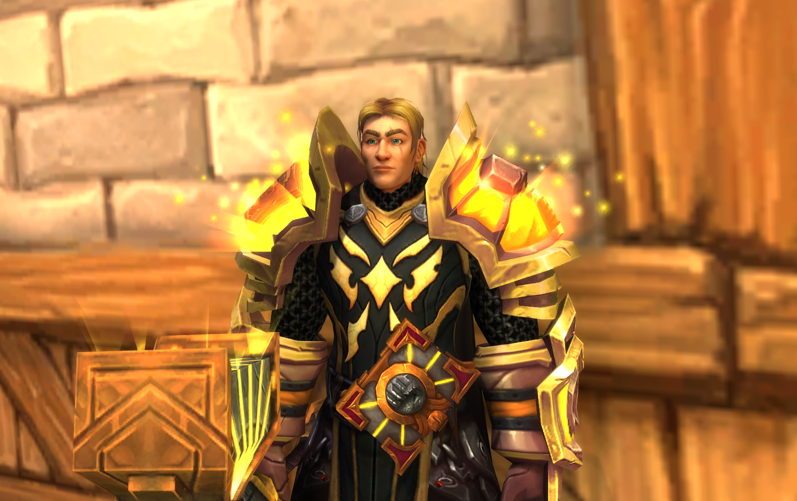

Made by Axel
Welcome to Tmoggers!
This a page I made not only because of my passion for World of Warcraft, but also to practice my HTML and CSS skills. I will be posting my favorite transmogs and characters and maybe some other fun stuff. This a page only for fun so don't take it too seriously. Enjoy!
